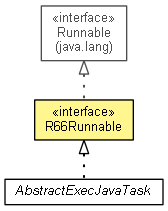

org.waarp.openr66.context.task
Interface R66Runnable
- All Superinterfaces:
- Runnable
- All Known Implementing Classes:
- AbstractExecJavaTask, TestExecJavaTask
public interface R66Runnable
- extends Runnable

Runnable interface for internal R66 tasks (through Rule EXECJAVA, or through message
BusinessRequestPacket)
- Author:
- Frederic Bregier
| Methods inherited from interface java.lang.Runnable |
run |
setArgs
void setArgs(R66Session session,
boolean waitForValidation,
boolean useLocalExec,
int delay,
String[] args)
- The way the parameter will be set
- Parameters:
session - The current R66SessionwaitForValidation - True if the caller will wait up to delay time in msuseLocalExec - True if currently R66 is configured to use LocalExec (may be ignored)delay - Delay in ms used only if waitForValidation is Trueargs - First arg is the Class name used
getFinalStatus
int getFinalStatus()
- Returns:
- the final status where 0 is OK, 1 is Warning, 2 is Error
toString
String toString()
- Overrides:
toString in class Object
- Returns:
- Information on task
Copyright © 2009-2012 Waarp. All Rights Reserved.